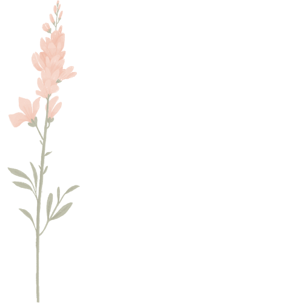
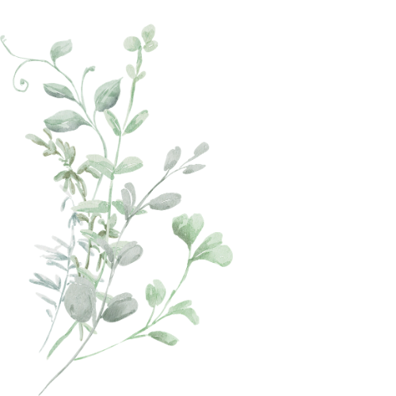
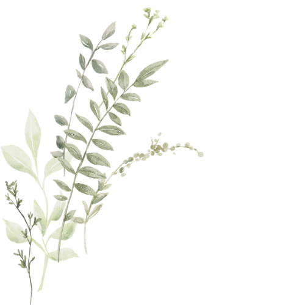

יש משהו מאתגר, ולפעמים גם כואב, ברגע שבו אנחנו צריכות להסביר מה עובר עלינו.
לא תמיד מדובר בדרמה גדולה.
- לפעמים זו הודעה קצרה מדי מחברה.
- או שיחה זוגית שבה משהו בטון מפעיל אותך.
- לפעמים זו ארוחה משפחתית רועשת מדי.
- או בקשה בעבודה שמציפה אותך כי כבר אין לך מרחב.
- ולפעמים זה פשוט קושי מתמשך: עומס, צורך ביותר בהירות, זמן, שקט או עדינות.
ובדיוק במקומות האלה, הרבה פעמים עולה הקונפליקט: מצד אחד, אני רוצה שיבינו אותי. מצד שני, אני לא רוצה להרגיש "יותר מדי", להצטדק או לדבר על הרגישות שלי כאילו היא בעיה.
אז לפעמים אנחנו בולעות, מסבירות יותר מדי, מתנצלות עוד לפני שביקשנו משהו, מתרחקות או מתפרצות.
הבונוס הזה הוא לא רק על "איך לדבר יפה". הוא על איך לתרגם את הרגישות שלך לשפה שאפשר לתקשר. איך להגיד מה קורה לך ומה את צריכה, בזוגיות, בעבודה, במשפחה ובחיים החברתיים, בצורה שמגדילה את הסיכוי שיבינו אותך, בלי להצטמצם ובלי להתנצל.

הרגישות שלך לא צריכה להיעלם כדי שתוכלי להיות בקשר.
אבל לפעמים היא כן צריכה תרגום
כדי שתרגישי בטוחה.
לפני שאני מסבירה, אני רגע חוזרת לעצמי
לפני הניסוח, לפני ההסבר, לפני הבקשה, כדאי לעצור לרגע קטן. לא צריך להירגע לגמרי או למצוא את הניסוח המושלם, רק כדי לבדוק מאיזה מקום אני עומדת לשתף.
יש הבדל בין לדבר מתוך חיבור וקרקע מסוימים, לבין לדבר מתוך הצפה, בהלה, או מגננה. אז נרצה לשאול את עצמינו:
מה קורה בתוכי עכשיו
האם אני מספיק בנוכחות כדי לדבר?
או שאני צריכה משהו לפני כדי לחזור לעצמי?
ואם כן, מה?
לפעמים התשובה תהיה: כן, אני יכולה לדבר עכשיו. ואז אפשר להשתמש בנוסחה שתכף נלמד. ולפעמים התשובה תהיה: עוד לא. וזה לא אומר שנכשלת בתקשורת. זה אומר שהמערכת שלך צריכה קודם רגע של עוגן.
במצב כזה, לא חייבים להסביר הכול עכשיו. אפשר להתחיל ממשפט מעבר קטן, ששומר על קשר מבלי להכריח אותך לדבר לפני שאת מוכנה. למשל:
לפעמים זה כל מה שצריך כדי לא להיעלם, לא להתפוצץ ולא לְרַצוֹת אוטומטית. רק להשאיר גשר קטן.

הנוסחה: גם + גם + בקשה
כשיש לנו קצת יותר קרקע, אפשר להשתמש בנוסחה פשוטה:
מה קורה בתוכי
מה אני מרגישה, קולטת, צריכה או חווה בפנים.
מה חשוב לי
מה חשוב לי לשמור, לאפשר או להביא: בקשר, בעבודה, בבית, בתפקוד או בערך שאני רוצה לחיות לפיו.
מה יעזור לי בפועל
משהו קטן, ברור, אפשרי ובר ביצוע.
הסיבה שהנוסחה הזאת חשובה היא שהיא מחזיקה שלושה דברים יחד. היא לא רק אומרת: קשה לי.
והיא גם לא רק אומרת: תעשו בשבילי משהו.
היא עוזרת לך לומר: זה מה שקורה לי. זה מה שחשוב לי. וזה מה שיעזור לי להישאר כאן בצורה טובה יותר. וזה הבדל גדול.
כי כשאנחנו רק מסבירות את הקושי, לפעמים הצד השני לא יודע מה לעשות עם זה. וכשאנחנו רק מבקשות משהו, בלי הקשר, הבקשה יכולה להישמע פתאומית או לא מובנת. אבל כשאנחנו מחברות בין החוויה הפנימית, הכוונה הטובה והבקשה הפרקטית, אנחנו מגדילות את הסיכוי שהצד השני יבין לא רק מה קשה לנו, אלא גם איך אפשר לעזור.
נסי בעצמך
בחרי סיטואציה או קשר בחייך שהיית רוצה לתרגל עליו כאן את הנוסחה.
כשמשהו שקורה עכשיו בקשר מפעיל אותי
יש רגעים שבהם משהו בקשר מפעיל אותנו, למשל טון, שתיקה, מבט או תחושה שלא הבינו אותנו. הנוסחה עוזרת לנו לא להאשים, לא להיעלם ולא להצטמצם, אלא להגיד מה קורה לנו, ומה יעזור לנו להישאר בקשר.
לחצו כדי לפתוח את הדוגמאות
כשיש שקט אחרי שאני משתפת משהו, אני שמה לב שאני מתחילה להילחץ. חשוב לי לא להיסגר ולבדוק מה באמת קורה. אז יעזור לי אם תגיד לי אם אתה צריך רגע לחשוב, או אם יש משהו שחשוב שנדבר עליו.
השקט הזה קצת מפעיל אותי. חשוב לי לא להמציא סיפור לבד בראש. אפשר שתגיד לי אם אתה פשוט צריך רגע?
כשאני מקבלת תשובה קצרה, אני שמה לב שאני מתחילה לפרש שאולי משהו לא בסדר. וגם חשוב לי לא להתרחק רק בגלל פרשנות שלי. אז אני רוצה לבדוק רגע, הכול בינינו בסדר, או שיש משהו שכדאי לדבר עליו?
קלטתי שהתשובה שלך הייתה קצרה, ומשהו בי התחיל להילחץ. יכול להיות שזה בכלל לא קשור אליי, אבל רציתי לבדוק אם הכול בסדר בינינו.
כשכמה אנשים מדברים אליי יחד, אני מרגישה שאני הולכת לאיבוד וקשה לי להישאר נוכחת. וגם באמת חשוב לי להיות איתכם ולא להתרחק. אז אני אקח כמה דקות שקט כדי לחזור לעצמי, ואז אחזור יותר פנויה.
כשכולם מדברים אליי יחד, אני מתבלבלת וקשה לי להישאר איתכם. אני לוקחת כמה דקות שקט וחוזרת.
כשאני רוצה להסביר מראש מה עוזר לי להיות במיטבי
במצבים שנרצה להסביר מה יעזור לנו לעבוד, לתפקד, לבצע, או להקשיב יותר טוב. כאן הנוסחה עוזרת לבטא את המסר ככה אני יכולה להיות נוכחת יותר ולהביא את היכולות שלי
.
וזה חשוב במיוחד לאנשים רגישים, כי הרגישות לא רק מקשה. היא גם מביאה עומק, דיוק, הקשבה, יצירתיות ויכולת לקלוט דברים שאחרים מפספסים. אבל כדי שזה יקרה, אנחנו צריכות סביבה שמאפשרת למערכת שלנו לתפקד ולא להגיע ליותר מדי הצפה.
גם כאן נשתמש באותה נוסחה: מה קורה לי + מה חשוב לי להביא + ומה יעזור לי בפועל.
קשה לי להתרכז כשיש הרבה רעש סביבי. אני רוצה לעשות את זה יסודי, אז יעזור לי זמן שקט למשימות שדורשות ריכוז.
כשיש הרבה משימות יחד, אני מתפזרת. יעזור לי שנחליט מה הכי דחוף ומה יכול לחכות, כדי שאעשה את זה ברמה הגבוהה שאני יכולה.
אני אוהבת להיות איתכם, אבל מפגשים גדולים מתישים אותי מהר. יעזור לי לדעת מראש מה התוכנית, או לבוא לזמן קצר יותר.
כשאנחנו לומדות שפה חדשה, במיוחד שפה של צורך, גבול, רגישות ובקשה, זה לא תמיד נשמע טבעי מהרגע הראשון. לפעמים זה מרגיש מלאכותי, וזה בסדר. תזכרי שהנוסחה גמישה ומה שחשוב זה שתקחי אותה ותנסחי אותה איך שמרגיש לך טבעי. למשל אם להגיד משהו כמו ״אני שמה לב שאני נהיית דרוכה״ מרגיש מלאכותי, אפשר פשוט להגיד: ״אני מתחילה להילחץ.״
שליף מהיר לסיכום
כל מה שצריך, בעמוד אחד. צלמי ושמרי בטלפון.
כשאני מוצפת ולא יכולה לדבר עכשיו
אני מוצפת כרגע, אבל חשוב לי להישאר בקשר. אני צריכה כמה דקות ואז אחזור לזה.
כשמשהו בקשר הפעיל אותי
כשזה קורה, אני שמה לב שאני מתחילה להילחץ / להיסגר / להתגונן. וגם חשוב לי להישאר בקשר ולא להתרחק. אז יעזור לי אם…
כשאני רוצה להסביר מה עוזר לי לתפקד טוב יותר
כשיש… אני מרגישה ש… וגם חשוב לי… אז מה שיעזור לי בפועל זה…
הגרסה הכי קצרה של הנוסחה
גם: מה קורה לי עכשיו?
גם: מה חשוב לי לשמור, לאפשר או להביא?
בקשה: מה יעזור לי בפועל?
איך למצוא מילים כשמשהו בי מופעל
תרגול קצר שיעזור לך לעצור רגע, לזהות מה קורה בפנים, ולבחור משפט אחד פשוט שאפשר להגיד בזמן אמת, בלי להתנצל, להיעלם או להתפוצץ. אפשר להאזין בישיבה, בהליכה או לפני שיחה רגישה.
🎧 את קובץ האודיו תמצאי כהערה בשיעור עצמו, בתוך הקורס.